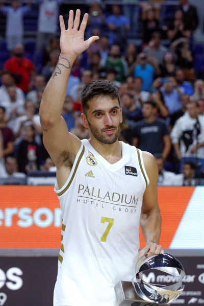
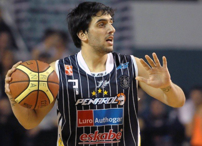
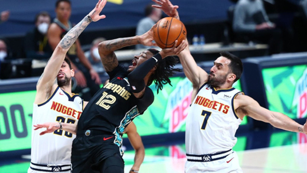
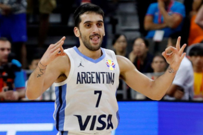

DESAFIO APLICANDO GRIDS
Facundo Campazzo (Córdoba, 23 de marzo de 1991) es un jugador profesional de baloncesto argentino que pertenece a la plantilla de los Denver Nuggets de la NBA. Con 1,78 metros de altura, se desempeña en la posición de base. Ha formado parte de la selección argentina en los Juegos Olímpicos de Londres 2012,la Copa Mundial 2014, los Juegos Olímpicos de Río de Janeiro 2016, los Juegos Olímpicos de Tokio 2020, entre otros torneos. Obtuvo la medalla de plata en la Copa Mundial 2019. Campazzo se inició en el baloncesto en el club Municipal de barrio Alta Córdoba a los 4 años, donde jugó hasta alrededor de los 14 años. Luego pasó a formar parte de Unión Eléctrica, otro equipo cordobés, hasta 2007, año en que decide probar suerte y probarse en los principales equipos de la ciudad de Mar del Plata (Peñarol y Quilmes), a lo que luego de pruebas en ambos equipos se suma a las filas de Peñarol de Mar del Plata. Ese mismo año Campazzo lideraría al equipo marplatense para obtener el título provincial y el título nacional en la categoría cadetes (sub-16).6 En 2008 logró repetir esos mismos títulos pero en la categoría siguiente, Juveniles (sub-18),7 títulos en los que fue figura y se consagró como una de las promesas del club.
   